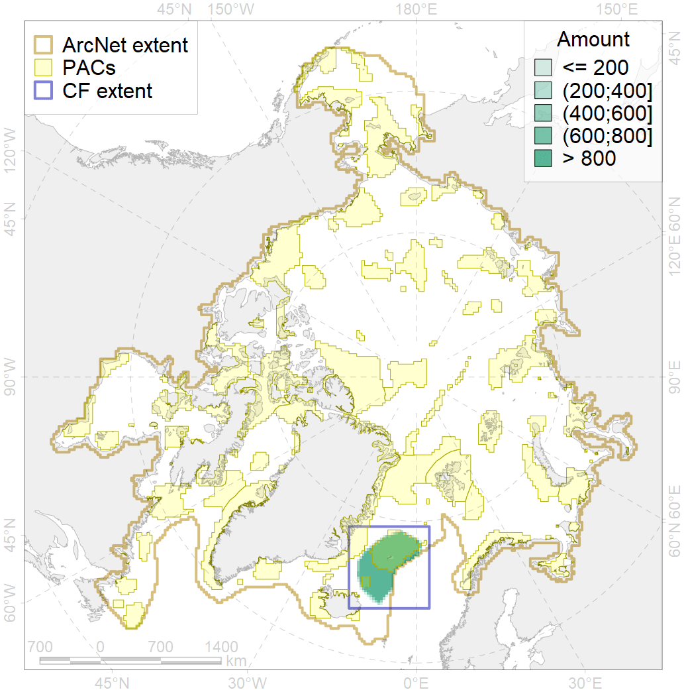
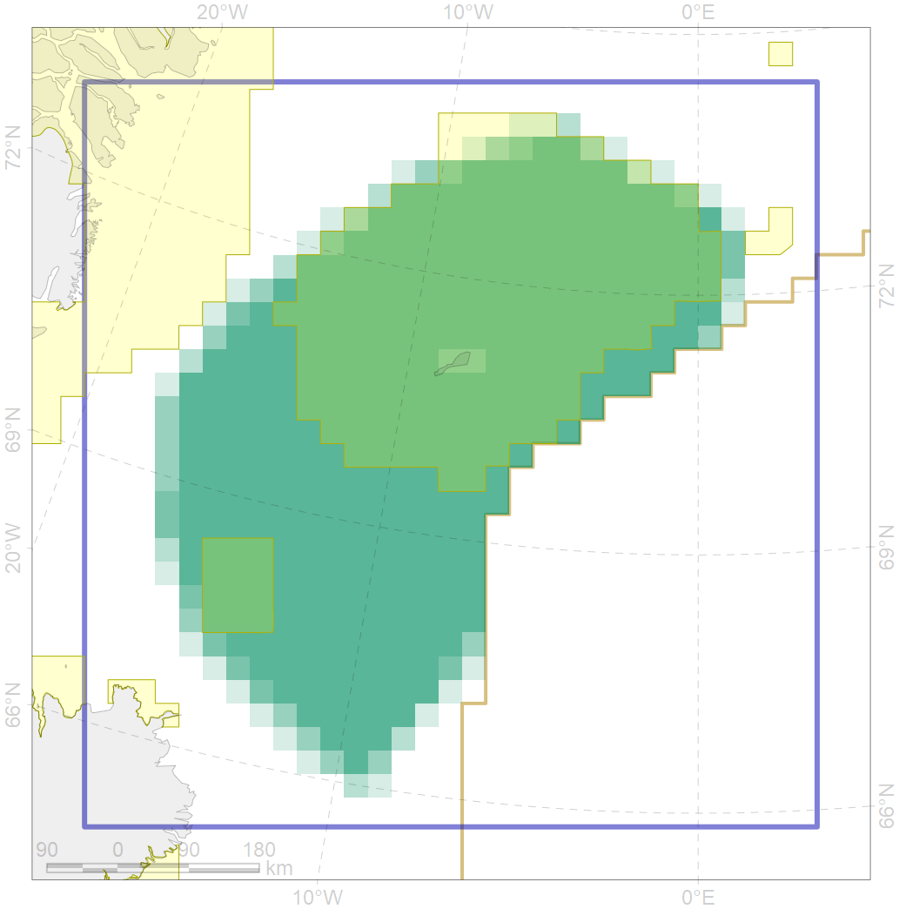

5049

| CF code | 5049 |
| CF name | Fin whale summer feeding areas in Jan Mayen |
| Time Period | 1987-2016 |
| Source(s) | Øien et al 2009; Vikingsson et al 2009; Sken-Mauritzen et al. 2009; Klepikovsky et al 2017 |
| Seasonality | June-September |
| Depth Horizon | 0-200 |
| Methodology | Aerial and ship surveys |
| Use Restrictions | |
| Author Name | Filatova |
| Notes | |
| Scenario’s Target | 0.528 |
| Target Achievement | 0.529 (Scenario: 100.1%) |
| PAC | Share of the Total Amount within the PAC | Share of the Target Achievement for the ArcNet | PAC’s Contribution to the Target Achievement |
|---|---|---|---|
| 34 | 48.9%51.1% | 81.4%82.4% | 81.3%82.3% |
| 36 | 3.3%3.8% | 4.7%5.0% | 4.7%5.0% |
| inner | 52.1%54.9% | 86.1%87.4% | 86.0%87.3% |
| outer | 47.9%52.2% | 14.0%18.4% | 14.0%18.4% |
| † supplement values are for area consistence whereas principal values are for Accenter compatible gridded stats |